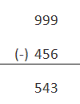
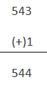
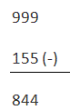
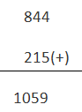
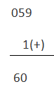
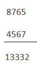
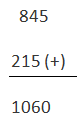
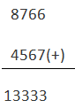

(1) 9s complement
(2) 10s complement
(3) 9s complement subtraction
(4) 10s complement subtraction
Now first of all let us know what 9's complement is and how it is done. To obtain the 9,s complement of any number we have to subtract the number with (10n - 1) where n = number of digits in the number, or in a simpler manner we have to divide each digit of the given decimal number with 9. The table given below will explain the 9's complement more easily
| Decimal digit | 9s complement |
|---|---|
| 0 | 9 |
| 1 | 8 |
| 2 | 7 |
| 3 | 6 |
| 4 | 5 |
| 5 | 4 |
| 6 | 3 |
| 7 | 2 |
| 8 | 1 |
| 9 | 0 |
Now coming to 10's complement, it is relatively easy to find out the 10's complement after finding out the 9,s complement of that number. We have to add 1 with the 9,s complement of any number to obtain the desired 10's complement of that number. Or if we want to find out the 10's complement directly, we can do it by following the following formula, (10n - number), where n = number of digits in the number. An example is given below to illustrate the concept of obtaining 10’s complement
Let us take a decimal number 456, 9's complement of this number will be

10's complement of this no

9's complement subtraction
We will understand this method of subtraction via an example
A = 215
B = 155
We want to find out A-B by 9's complement subtraction method
First we have to find out 9’s complement of B

Now we have to add 9’s complement of B to A

The left most bit of the result is called carry and is added back to the part of the result without it

Another different type of example is given
A = 4567
B = 1234
We need to find out A - B
9's complement of B
8765
Adding 9's complement of B with A

Adding the carry with the result we get
3333
Now the answer is - 3333
NB if there is no carry the answer will be – (9’s complement of the answer)
Subtraction by 10's complement
Again we will show the procedure by an example
Taking the same data
A = 215
B = 155
10's complement of B = 845
Adding 10’s complement of B to A

In this case the carry is omitted
The answer is 60
Taking the other example
A = 4567
B = 1234
10's complement of B = 8766
Adding 10's complement of B with A

To get the answer the carry is ignored
So, the answer is - 3333
NB. If there is a carry then the answer is – (10's complement of the sum obtained)
 by
by